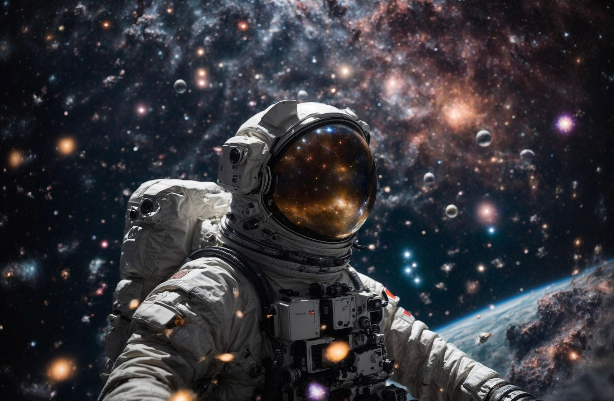

Atlasio expedition · 2026
We travel past the edge of the known sky and bring back stories you can step into.
Move to bend the light · click to pulse
Beyond thehorizon
Atlasio maps the places where gravity bends light and time. We turn the data from each crossing into films, live models and journeys anyone can explore from home.
Mission chapters
Five crossings, one way home. Hover to look, click to watch.

Every hour near the giant is borrowed from home
Our explorers carry two clocks: one for the ship, one for the people waiting on Earth.
Time dilation calculator
How far can you fall?
Move the ship closer to the event horizon. Near a non-rotating black hole, time on board runs slower than on Earth by a factor of 1 / √(1 − Rs/r).
One hour on board is 1.41 hours on Earth.
Schwarzschild model, illustrative only. Rotating black holes can stretch the effect much further.
Chapter 06 · The fifth room
Gravity travels
where light can't
A room built from time instead of walls. Move to look along its corridors.
Move to steer · click to nudge
Ready for launch?
Tell us about your film, exhibition or brand world. We reply within two working days.
hello@atlasio.example Let's work together